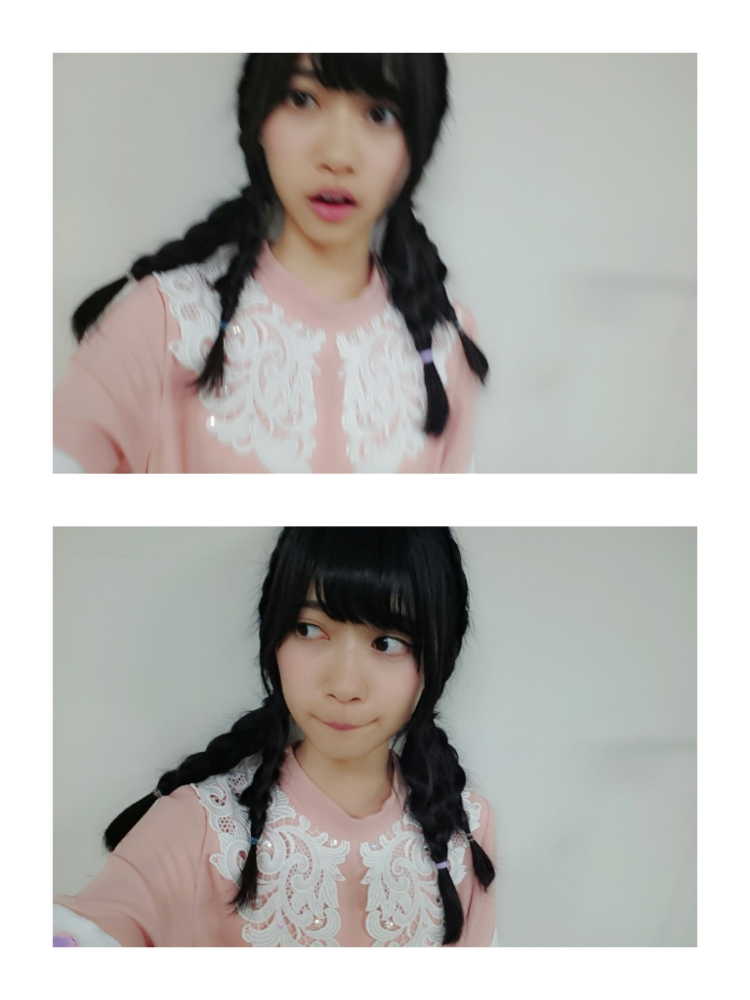
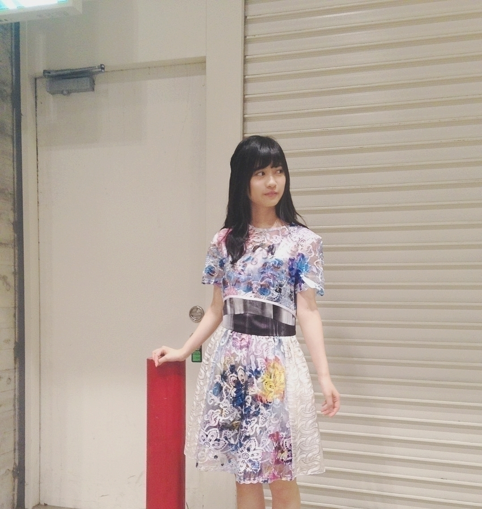
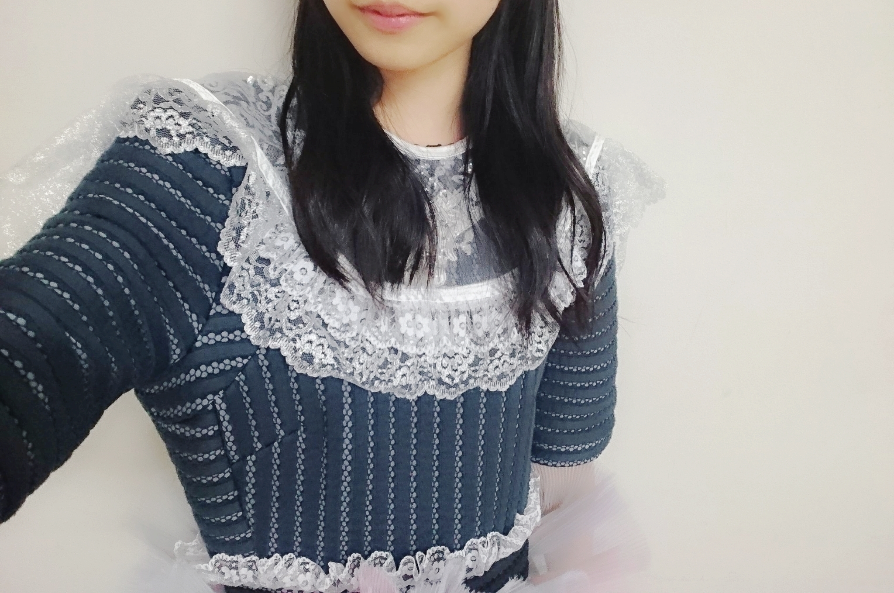
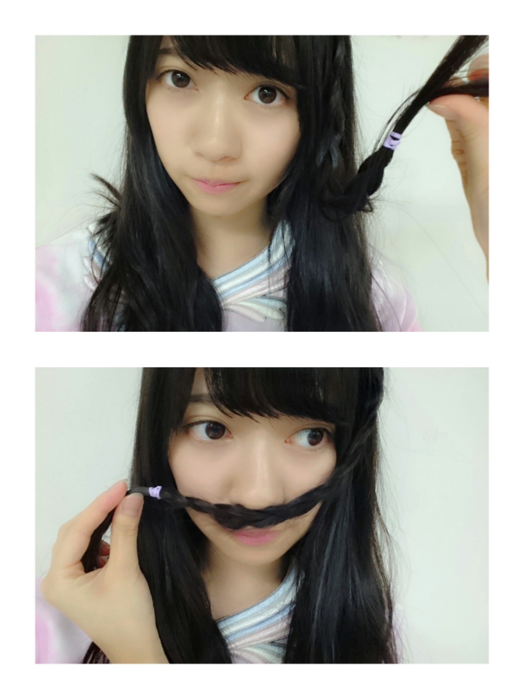
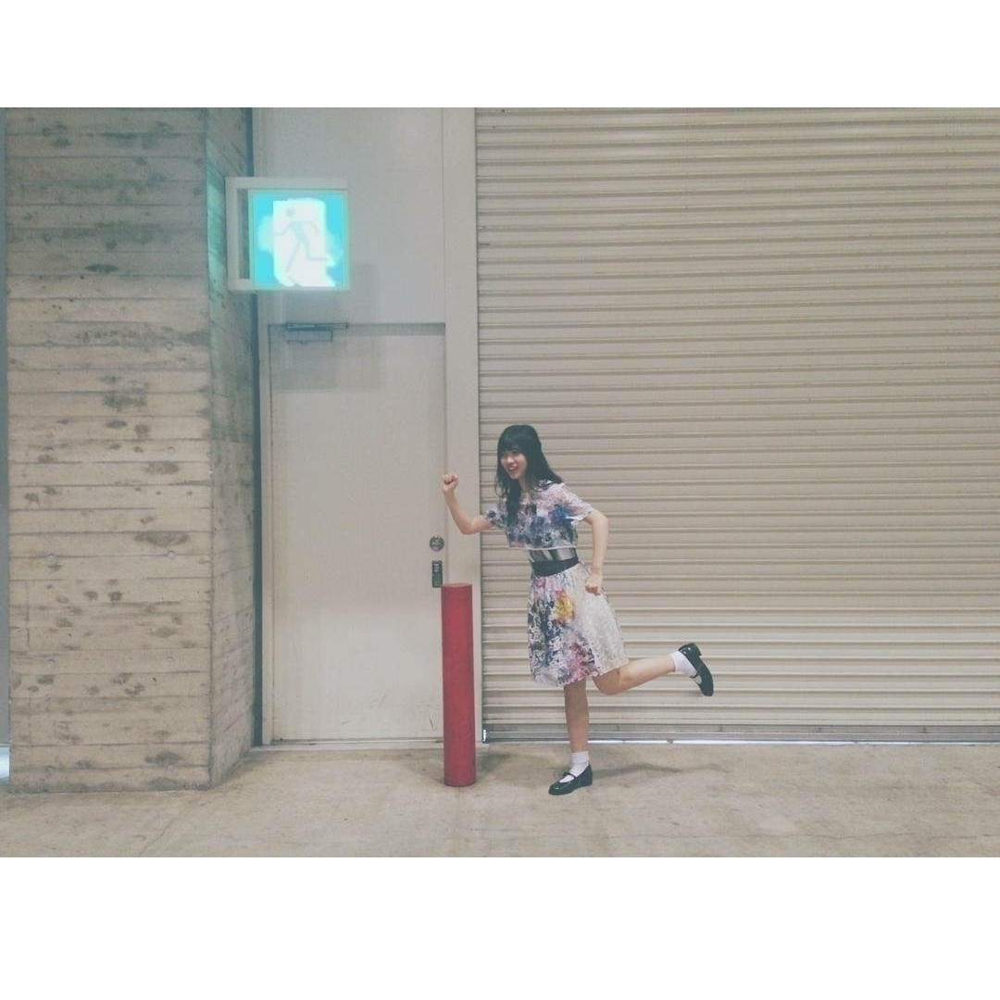

2016/0627Monカ<力
白石さんのお洋服
おさがりしました！
衛藤さん
川村さんにもおさがり頂いた事があるのですが
やっぱり嬉しい事ですね♬
おさがりって年下の特権って感じがして
普段はあまり年下だってことよく思わないし
損な事のほうが多いけど
このときばかりは
年下で良かったって思える嬉しい事です
ちなみに、白石さんから
3着頂きましたm(._.)m
本当にありがとうございます
大切にします
アルバム個別握手会in幕張メッセ
《髪型》
1部ストレート
2部ゆるまき
3部ハーフアップ
4部三つ編みアレンジ
5部テラダ公案海老フライヘアー

こちらの画像が海老フライヘアーです。
5部でやっていました
分かりやすくする為に
4本分けて
撮影しておりますが
実際普通にしてみると
ヒッピーな
仕上がりになります
リボンとかあったら
尚良くなると思われ
この髪型爆発的に
流行れ！！！！！！
《お衣装》
1部嫉妬の権利 水色ver
2部ポピパッパパー
3部不等号
4部今話したい誰かがいる
5部嫉妬の権利 ピンクver

ポピパッパパー凄くお気に入り
また、着たいなm(._.)m
もしかしたら着るかもです
不等号は
普段着れない方の
形のを着ました


今話したい誰かがいるは
前回京都でも着たのですが
その時は飛鳥さんverを着ていたのですが
今回、テラダのが用意あったのでテラダverのものを着ました
《皆さんに質問》
質問①
自分の座右の銘を教えて下さい
質問②
おすすめの本を教えて下さい
もっと
自分の知らない事を
学びたくて
最近どうやったら
いろんな
世界を知れるんだろうって
よく考えます。
コメントとか
読ませて頂いてると
そこには私の知らない事とか私では考え付かない
発想があるから
コメントを
読むのが好きです
もし良かったら、
質問に答えてくれると嬉しいです
ご気軽にして下さい♬
最後まで
読んでくださりありがとうございました
おやすみなさいです

逃げろーm(._.)m
2016/06/27 20:48
コメント(1301)
たまらんぜー！！
いつも応援してます
らんらん、好きっ❤️
♪~♪ d(⌒o⌒)b♪~♪ﾗﾝﾗﾝ
蘭世可愛い
らんぜ選抜に近づいてる！！
絶対！
今のままの感じでいいと思う！
がんばろう可愛いよ
絶対！
今のままの感じでいいと思う！
がんばろう可愛いよ
らんぜ

捕まえた！
（笑）
捕まえた！
（笑）
座右の銘は「緊張しているのはそれだけ本気だから自分じゃなくて相手をしっかり見ろ」
座右の銘は「緊張しているのはそれだけ本気だから自分じゃなくて相手をしっかり見ろ」
座右の銘は 愛されるより愛せ！！
おすすめの本はマジックツリーハウスだよー
おすすめの本はマジックツリーハウスだよー
らんぜー！15thのLIVE絶対いくね！
①これでいいのだ
②聖書
②聖書
①一期一会
②嫌われる勇気
握手会楽しかったよ！
頑張れ蘭世！
②嫌われる勇気
握手会楽しかったよ！
頑張れ蘭世！
握手会おつかれさま！！
座右の銘は「1日1笑」
オススメの本は「半分の月がのぼる空」
暑い日が続くけど体調に気をつけて頑張ってください\(｡･ω･)/
座右の銘は「1日1笑」
オススメの本は「半分の月がのぼる空」
暑い日が続くけど体調に気をつけて頑張ってください\(｡･ω･)/
おつかれ！
今日もメール来ないのかと思ってたよー
ほんとに元気？
まぁまぁ寂しかったー
なんの仕事かなー
蘭世への愛がとまらんぜ！
今日もメール来ないのかと思ってたよー
ほんとに元気？
まぁまぁ寂しかったー
なんの仕事かなー
蘭世への愛がとまらんぜ！
らんぜー♡
握手会お疲れ様！
これからも頑張ってね！！
握手会お疲れ様！
これからも頑張ってね！！
おつかれさまー
最近仕事いっぱいだねー
本はジョーカー・ゲームがオススメ！
アニメを見たあとに読むともっと
面白いよ！
握手会楽しみにしてるね
最近仕事いっぱいだねー
本はジョーカー・ゲームがオススメ！
アニメを見たあとに読むともっと
面白いよ！
握手会楽しみにしてるね
握手会おつかれさまー！！！
座右の銘かーー、んーー、
おもいつかないや。。。笑
僕もこれを機に考えてみようかな。
おすすめの本！なんだろ、
今よんでるのは、｢クリーピー｣！！！
よっしゃー！あしたからも
がんばろーー！！！！
座右の銘かーー、んーー、
おもいつかないや。。。笑
僕もこれを機に考えてみようかな。
おすすめの本！なんだろ、
今よんでるのは、｢クリーピー｣！！！
よっしゃー！あしたからも
がんばろーー！！！！
海老フライヘアー笑った（笑）
わたしが流行らせてやる( ^ω^ )にひひひ
飛鳥ちんとらんちゃんの写メ見たいよ〜
ずっと待っておりますヽ(〃v〃)ﾉ
本読まないごめんね〜（ ; ; ）（ ; ; ）
座右の銘…諦めなければ叶う！かな！
ずっと思ってれば本当になんでもかなっちゃうからね！
諦めないことが大事☆〜（ゝ。∂）
わたしが流行らせてやる( ^ω^ )にひひひ
飛鳥ちんとらんちゃんの写メ見たいよ〜
ずっと待っておりますヽ(〃v〃)ﾉ
本読まないごめんね〜（ ; ; ）（ ; ; ）
座右の銘…諦めなければ叶う！かな！
ずっと思ってれば本当になんでもかなっちゃうからね！
諦めないことが大事☆〜（ゝ。∂）
座右の銘ってかこれを大切にしてるって言葉は
「気軽に真面目に」
何事も真面目にやるのは大切だけど気重にやっても
視野が狭くなるだけだし良い行動だったり考えが
出来なくなるから気持ちは気軽にを大切にしてる！！
「気軽に真面目に」
何事も真面目にやるのは大切だけど気重にやっても
視野が狭くなるだけだし良い行動だったり考えが
出来なくなるから気持ちは気軽にを大切にしてる！！
蘭世ーーーー!!!!
いつもいつも蘭世に癒されてます!!
自分の座右の銘は「雪耐えて梅花麗し」です!!
おすすめの本は伊坂幸太郎先生の「オーテュボンの祈り」です!!ぜひ読んでください!!
いつもいつも蘭世に癒されてます!!
自分の座右の銘は「雪耐えて梅花麗し」です!!
おすすめの本は伊坂幸太郎先生の「オーテュボンの祈り」です!!ぜひ読んでください!!
蘭世✋(◉ ω ◉｀)よお
ブログ更新ありがと～！
蘭世可愛いな…
改めて可愛い！
好きだわ～～
ポピパッパパーの衣装めっちゃ似合うね
俺も好きだで！
よきよき
座右の銘か……
最近好きなのは寺田家の「真似される人であれ」かな
ほんとにそうだなって思う
自分の行動を一回立ち止まって考えられるようになった
蘭世大好きだよ
ブログ更新ありがと～！
蘭世可愛いな…
改めて可愛い！
好きだわ～～
ポピパッパパーの衣装めっちゃ似合うね
俺も好きだで！
よきよき
座右の銘か……
最近好きなのは寺田家の「真似される人であれ」かな
ほんとにそうだなって思う
自分の行動を一回立ち止まって考えられるようになった
蘭世大好きだよ
エビフライヘアーおもろい笑
質問返し
座右の銘は好きこそ物の上手なれ
おすすめの本は宮部みゆきさんの模倣犯
5巻中2.3.4巻は
伏線ばっかりであまり面白くないかも
知れないけど最後に全部繋がるから
懲りずに読んで欲しいなー
質問返し
座右の銘は好きこそ物の上手なれ
おすすめの本は宮部みゆきさんの模倣犯
5巻中2.3.4巻は
伏線ばっかりであまり面白くないかも
知れないけど最後に全部繋がるから
懲りずに読んで欲しいなー
私の死んだ息子の、座右の銘です。
昨日と おんなじ 今日がいい
彼は猫なので これで通用していましたが、
人間 ましてはアイドルさんは
決して参考にはしないように。
らんぜぃ！
縁の下の力持ちが座右の銘だよ！
イニシエーションラブの、小説はすごい面白いよ！
蘭世いつか、読んでね〜♪
イニシエーションラブの、小説はすごい面白いよ！
蘭世いつか、読んでね〜♪
らんぜちゃん
 こんばんわー
こんばんわー
海老フライヘアー、カワイイよ～！
海老フライヘアー、カワイイよ～！
おっちゃんは長男！ しかも妹二人だから、お下がりはないな！ 乃木はお姉ちゃん沢山いるからな♪(*ノﾟДﾟ)八(*ﾟДﾟ*)八(ﾟДﾟ*)ﾉｨｪｰｨ！
全部似合ってる！
①はほんとに特にないです
②は伊坂さんのフィッシュ・ストーリーかな
あんまり本読まないからすいません
①はほんとに特にないです
②は伊坂さんのフィッシュ・ストーリーかな
あんまり本読まないからすいません
質問①
「今が最悪」と言える間は、最悪ではない。
ウィリアム・シェイクスピア 「リア王」
質問②
「楽園のカンヴァス」 原田マハ
絵画、美術とそれに携わるキュレーターという職業に焦点を当てたミステリー
「今が最悪」と言える間は、最悪ではない。
ウィリアム・シェイクスピア 「リア王」
質問②
「楽園のカンヴァス」 原田マハ
絵画、美術とそれに携わるキュレーターという職業に焦点を当てたミステリー
自分の座右の銘
初志貫徹
これは何度も諦めそうになった時もあるけど、最初に決めた高い目標は絶対に叶えるって意味で自分の座右の銘にしてるよ〜！！！
オススメの本
君の膵臓を食べたい
これはまだ読んでないんだけど、友達にオススメって言われてこないだ買いに行ったの！！
ほんとにオススメらしい！！是非読んでみてね♡
5部制ほんとにおめでとう！
ようやく来たね、、、らんらんが上の方の5部制メンバーの名前のところに入って、自分が初めてらんらんのところに会いに行った時は第5部の90分間だけだったからこんなんになるなんてもう嬉しくてたまらんぜ
なかなか忙しくて会いに行けてない分友達にらんらんのところいいよ〜って推してて、友達がらんらんの握手券当てたらしいのでこんど会いに行くって！！！
自分も時間ができたら透明な色の時コーディネートしてもらった思い出のお洋服を着て遊びに行きます！！
でも神宮は初日と最終日おじゃますることは確定したのでそこでらんらんの姿を観れるのをたのしみにしてるね
これから暑くなるけど体調には気をつけて頑張ってね！！！！
座右の銘 なにくそ魂！
おすすめの本 乱反射
蘭世もなにくそ魂で一緒に、ひたむきに頑張ろう！俺も頑張るよ！
自分の座右の銘は、
『夢見ることができれば、それは実現できる』 です!!
『夢見ることができれば、それは実現できる』 です!!
座右の銘……とはちょっとズレるかも知れないけど、『安心して前に進めるように、今を残そう』って言葉は心の中にいつも留めてる。この先迷うことは絶対にあって、その時、後ろ振り返っても何もなかったら不安になる。そうならないように、辛い時はこの言葉を自分に投げかけて原動力にしてる！
小説でいいなら、無難だけど図書館戦争。ライトノベルだと、ココロコネクトもすごくおすすめ。
小説でいいなら、無難だけど図書館戦争。ライトノベルだと、ココロコネクトもすごくおすすめ。
いつも、楽しみにしてます。
座右の銘 鶏口となるも牛後となるなかれ
意味は調べてみてくださいね。
お薦めの本は 司馬遼太郎先生の 『龍馬が行く』
読むと感動の嵐です。ぜひ読んでつかーさい！
ではまたね。
座右の銘 鶏口となるも牛後となるなかれ
意味は調べてみてくださいね。
お薦めの本は 司馬遼太郎先生の 『龍馬が行く』
読むと感動の嵐です。ぜひ読んでつかーさい！
ではまたね。
質問1 夢は見るものではなく叶えるものだ！
質問2 犬ぞり隊、南極大陸横断す
です。面白いのでぜひ‼︎
お仕事頑張って下さい
質問2 犬ぞり隊、南極大陸横断す
です。面白いのでぜひ‼︎
お仕事頑張って下さい
蘭世こんばんわー!!
ブログ更新まってました!!
二つ目の質問のおすすめの本は、漫画になるんだけど、フェアリーテイルって漫画めちゃ面白いよ!!読んだことなかったらぜひ読んでみて!!
今回もブログの蘭世の写真可愛すぎるよ!!
次のブログも楽しみにしてます!!
蘭世の勢いとまらんぜ!!
ブログ更新まってました!!
二つ目の質問のおすすめの本は、漫画になるんだけど、フェアリーテイルって漫画めちゃ面白いよ!!読んだことなかったらぜひ読んでみて!!
今回もブログの蘭世の写真可愛すぎるよ!!
次のブログも楽しみにしてます!!
蘭世の勢いとまらんぜ!!
蘭世ブログ更新ありがとうー！！おさがり貰えてほんとによかったね(笑)握手会楽しいかったよー。私服じゃなくて、衣装っていうのが新鮮でめっちゃよかった！また2週間後にも握手行けるので凄く楽しみです
座右の銘は何だろー、、、うーん、、俺の場合はやればなんとかなるとかかなー(笑)
本は無難だけどハリーポッターはやっぱり面白いよ！原作の方が情報いっぱい載ってるし、後はダレン・シャンも面白い！こんなもんかなー、、、参考にちょっとでもなればいいです。
明日からも仕事頑張ってー！応援してます！！
座右の銘は何だろー、、、うーん、、俺の場合はやればなんとかなるとかかなー(笑)
本は無難だけどハリーポッターはやっぱり面白いよ！原作の方が情報いっぱい載ってるし、後はダレン・シャンも面白い！こんなもんかなー、、、参考にちょっとでもなればいいです。
明日からも仕事頑張ってー！応援してます！！
乃木坂の衣装って可愛くていいですよね！ポピパッパパーの衣装は色の使い方がステキだな〜と。お気に入りは、太陽ノックMVverと、大人への近道MVver！質問は、1.
天は自ら助くる者を助く、2. 東京防災、にします！
① 人は人、俺は俺
② 漫画になっちゃうけど、バガボンド、スラムダンク。物語もかっこいい絵もおすすめだよ寺田くん あと料理本
あと料理本 ついついマネして作りたくなるだ〜
ついついマネして作りたくなるだ〜
② 漫画になっちゃうけど、バガボンド、スラムダンク。物語もかっこいい絵もおすすめだよ寺田くん
①「他人の座右の銘で
良いなと思ったものを取り入れる」
②新明解国語辞典
言葉の説明が面白く、延々と眺めてられる。
良いなと思ったものを取り入れる」
②新明解国語辞典
言葉の説明が面白く、延々と眺めてられる。
座右の銘は臨機応変。
おすすめの本は赤川次郎さんの『三毛猫ホームズ』シリーズ、東川篤哉さんの『謎解きはディナーのあとで』、東野圭吾さんの『新参者』『プラチナデータ』、夏川草介さんの『神様のカルテ』とかかな！
ぜひ読んでみて☆彡
おすすめの本は赤川次郎さんの『三毛猫ホームズ』シリーズ、東川篤哉さんの『謎解きはディナーのあとで』、東野圭吾さんの『新参者』『プラチナデータ』、夏川草介さんの『神様のカルテ』とかかな！
ぜひ読んでみて☆彡
らんぜちゃんお疲れさまです！
向学心が強くてすごいなと思います！
アイドルがそうやって学ぼうとする姿を見ているとファンのこちらも頑張らなきゃと思えます！ありがとうございます！
質問①座右の銘
座右の銘と言えるかは微妙ですが、相田みつをさんの
「どのような道をどのように歩くとも いのちいっぱい 生きればいいぞ」
です。
人生でどのような選択をしたとしても、その時々その道で精一杯頑張れば良いんだと捉え、励まされて生きています。
質問②おすすめの本
「世界から猫が消えたなら」川村元気
「青い鳥」重松清
大切なものは何か、ということを教えてくれる２冊です。
「レインツリーの国」有川浩
純度100%の泣ける恋愛小説です。
「風が強く吹いている」三浦しをん
青春駅伝小説です！
長くなりました！
何かの参考になれば幸いです(^^)
向学心が強くてすごいなと思います！
アイドルがそうやって学ぼうとする姿を見ているとファンのこちらも頑張らなきゃと思えます！ありがとうございます！
質問①座右の銘
座右の銘と言えるかは微妙ですが、相田みつをさんの
「どのような道をどのように歩くとも いのちいっぱい 生きればいいぞ」
です。
人生でどのような選択をしたとしても、その時々その道で精一杯頑張れば良いんだと捉え、励まされて生きています。
質問②おすすめの本
「世界から猫が消えたなら」川村元気
「青い鳥」重松清
大切なものは何か、ということを教えてくれる２冊です。
「レインツリーの国」有川浩
純度100%の泣ける恋愛小説です。
「風が強く吹いている」三浦しをん
青春駅伝小説です！
長くなりました！
何かの参考になれば幸いです(^^)
ブログ更新ありがとう＼(^o^)／
握手会お疲れ様！
2、3、4部蘭世レーンにお邪魔したけど
とても元気もらいました！ありがとう＼(^o^)／
そしてめっちゃかわいかった！
これからもコメントするね！
次の個握は15thのパシフィコだけども笑
質問
①現状維持
簡単そうで実は難しい現状維持が座右の銘！
②スタンフォードの自分を変える教室
物事を先延ばしにしたり、やる気が出なかったりして困った経験がある人に捧げた本みたいで、これとても為になる本でした！ぜひ読んでみて＼(^o^)／
んじゃ！
握手会お疲れ様！
2、3、4部蘭世レーンにお邪魔したけど
とても元気もらいました！ありがとう＼(^o^)／
そしてめっちゃかわいかった！
これからもコメントするね！
次の個握は15thのパシフィコだけども笑
質問
①現状維持
簡単そうで実は難しい現状維持が座右の銘！
②スタンフォードの自分を変える教室
物事を先延ばしにしたり、やる気が出なかったりして困った経験がある人に捧げた本みたいで、これとても為になる本でした！ぜひ読んでみて＼(^o^)／
んじゃ！
まいやんに服貰ったんですね❗おめでとうございます！
どんな服か見たいので握手会とかでぜひ着て欲しいです
どんな服か見たいので握手会とかでぜひ着て欲しいです
ブログ更新ありがとう＼(^o^)／
握手会お疲れ様！
2、3、4部蘭世レーンにお邪魔したけど
とても元気もらいました！ありがとう＼(^o^)／
そしてめっちゃかわいかった！
これからもコメントするね！
次の個握は15thのパシフィコだけども笑
質問
①現状維持
簡単そうで実は難しい現状維持が座右の銘！
②スタンフォードの自分を変える教室
物事を先延ばしにしたり、やる気が出なかったりして困った経験がある人に捧げた本みたいで、これとても為になる本でした！ぜひ読んでみて＼(^o^)／
んじゃ！
握手会お疲れ様！
2、3、4部蘭世レーンにお邪魔したけど
とても元気もらいました！ありがとう＼(^o^)／
そしてめっちゃかわいかった！
これからもコメントするね！
次の個握は15thのパシフィコだけども笑
質問
①現状維持
簡単そうで実は難しい現状維持が座右の銘！
②スタンフォードの自分を変える教室
物事を先延ばしにしたり、やる気が出なかったりして困った経験がある人に捧げた本みたいで、これとても為になる本でした！ぜひ読んでみて＼(^o^)／
んじゃ！
｢有言実行｣今の俺にはこれしかない！大学合格してきます
おはようございます
こんにちは
こんばんは
海老食べれないけど、この海老なら食べれそう！笑
蘭世ちゃん本当にかわいい。
座右の銘:和して流れず
おすすめの本:ノルウェイの森
だよ！
こんにちは
こんばんは
海老食べれないけど、この海老なら食べれそう！笑
蘭世ちゃん本当にかわいい。
座右の銘:和して流れず
おすすめの本:ノルウェイの森
だよ！
蘭世お疲れ様です。
質問①の答え
→不撓不屈
質問②の答え
→本読まない...。
体調に気をつけて頑張ってください！
質問①の答え
→不撓不屈
質問②の答え
→本読まない...。
体調に気をつけて頑張ってください！
蘭世ー。


まいやんの服で個別待ってます